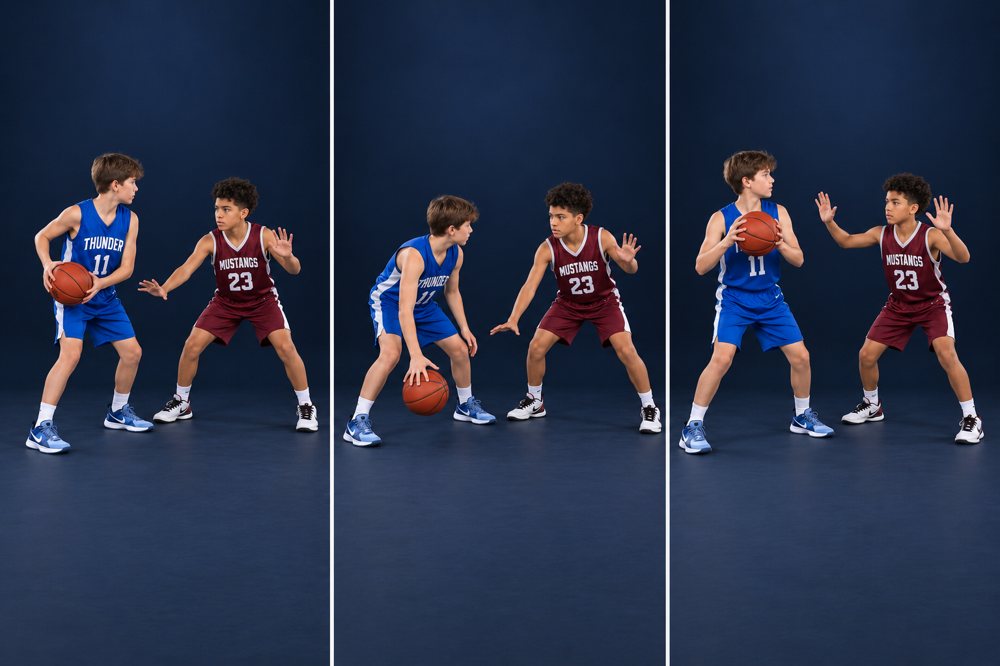

Start roughly an arm’s length away, then adjust for the attacker’s speed, shooting range, and the coach’s plan. This is a teaching starting point, not a fixed distance. Stay between your matchup and the basket.
PHOTO WALKTHROUGH
Clear stills · one action at a time
3 photo steps

01
Step 1 · Balance and cushion
STEP 01
Balance and cushion
Hips down. Eyes on the torso. Hands available.
Bend at the hips and knees with feet a little wider than shoulders. Stay ready to push either way; do not squat so wide that you cannot move.
Use one hand near the ball’s path and the other to make a likely pass harder. Hands stay in space, not on the attacker. Which hand does which job changes with the ball.
Catch this mistake
Leaning over your toes or touching the attacker to measure the gap.
02
Step 2 · Contain the dribble
STEP 02
Contain the dribble
Move your feet before reaching with a hand.
For a short slide, push off the trailing foot, step with the lead foot, then recover the base. Do not click heels together.
Keep a hand available near a low dribble without lunging. If beaten, turn and sprint to recover; trying to slide forever will not catch the ball handler.
Catch this mistake
Swiping down, reaching across the body, or grabbing after getting beaten. Contact can be a foul in either swipe direction.
03
Step 3 · React when it is picked up
STEP 03
React when it is picked up
Active hands. No contact. Stay balanced.
When the dribble ends, make the next pass difficult with active hands and legal positioning. Follow the ball with your hands without falling for every fake.
Do not crowd chest-to-chest or reach through the arms. Stay responsible for a pivot, pass, or shot; your job is not over.
Catch this mistake
Treating one hand as permanently low and one permanently high. Read the ball and the available pass.
AI-created photo illustrations for teaching body positions. These are separate stills, not slow-motion game footage. Use the written cues and diagrams for movement direction and rules.
FEET CONTAIN → HANDS DISRUPT
KEEP IT LEGAL
Know the boundary
A hand in the passing lane is not permission to hold or hand-check. On-ball hands pressure the ball; off-ball defenders also need to see their matchup and the ball.
TRY IT AT PRACTICE
Start slow, then add a read
Pairs: 20 seconds mirroring without a ball, 20 seconds with a slow dribble, then 20 seconds with a picked-up ball. Switch roles. Score a balanced contain and clean contest; do not reward a risky steal that gives up a drive.
Ask yourself
Can I still stop the drive if the attacker moves right now?
Coaching references & teaching notes
These are team teaching adaptations. Sources support the principles; the AI-created illustrations are not official rules diagrams or endorsements. Check your event’s local rules with the coach.